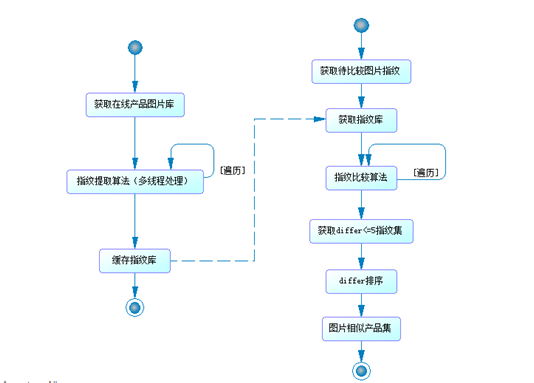
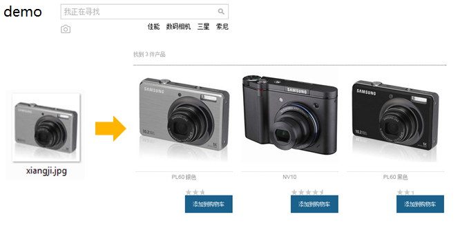

image retrieval 图像识别检索/相似图像搜索 ，基本原理为采用算法识别图像特征，并与待检索图片特性进行比较，差异小为相似图片。Image retreval integrate with hybris solution以感知哈希算法为基础在hybris中进行图片指纹计算和 指纹差异比较整合，获取图片相似度较高产品信息  Key points： 1 cronjob定时获取所有online产品图片，计算图片指纹，存入缓存 2 一张图片生成指纹为200ms左右，采用多线程处理，大大缩减更新图片指纹库所需要的时间 3 图片检索时，将待检索图片的指纹与图片指纹库中的指纹对比，差异小为相似图片 4 单张图片指纹对比<1ms，遍历检索对比图片无性能问题  |
contributor：kairong,james,wangmeng